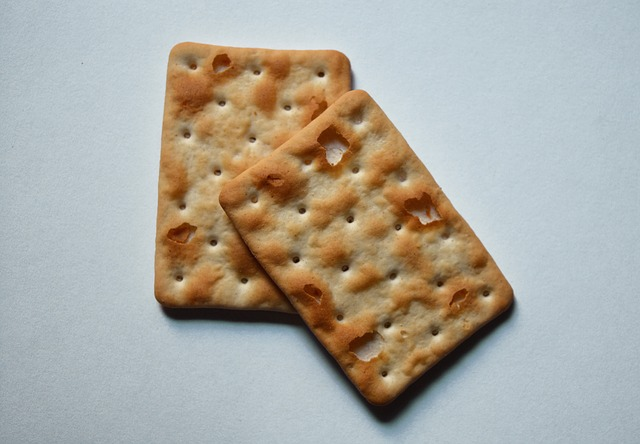

A cream cracker is a flat, usually square, savoury biscuit. The name "cream crackers" refers to the method in which the mixture is creamed during manufacture. The cream cracker is traditionally prepared using fermented dough.
They are made from wheat flour, vegetable oil and yeast, and are commonly served with cheese,[2] corned beef or other savoury topping such as Marmite or Vegemite. They are also eaten with butter or margarine or without accompaniment.
The cream cracker was invented by Joseph Haughton at his home in Dublin, Ireland, and then manufactured by William Jacob in a small bakery around 1885.
Cream crackers are popular in the United Kingdom, Ireland, Argentina (brands include Traviata, manufactured by Grupo Arcor, and Express, manufactured by Mondelez), Taiwan, Peru, Chile, Brazil, Southeast Asia, South Asia and South Africa. The most widely known cream cracker brand is Jacob's. The Jacob's brand in Ireland is owned by Jacob Fruitfield Food Group, part of the Valeo Foods Group, and in the UK, Europe and North America, it is owned by United Biscuits. Manufacturers in Southeast Asia include Khong Guan, Hup Seng, Hwa Tai, and Jacob's (manufactured by Kraft Malaysia). Manufacturers in South Asia include Ceylon Biscuits Limited, Maliban Biscuit Manufactories Limited (Sri Lanka) and Britannia Industries (India), and in South Africa, Bakers is one of the most prominent manufacturers. Purity Factories manufactures cream crackers with lard in Newfoundland, Canada.